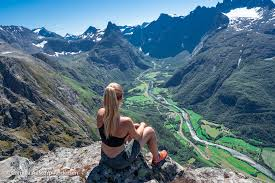

Romsdalseggen ridge is one of the world's most scenic hikes (Lonely Planet 2011).This hike through the dramatic landscape features many highlights. From the ridge, you can see the majestic Trollveggen cliff, surrounded by a number of well-known mountains. Romsdalseggen ridge is one of the most spectacular backdrops in the world, not far from the mountaineering capital Aandalsnes.
